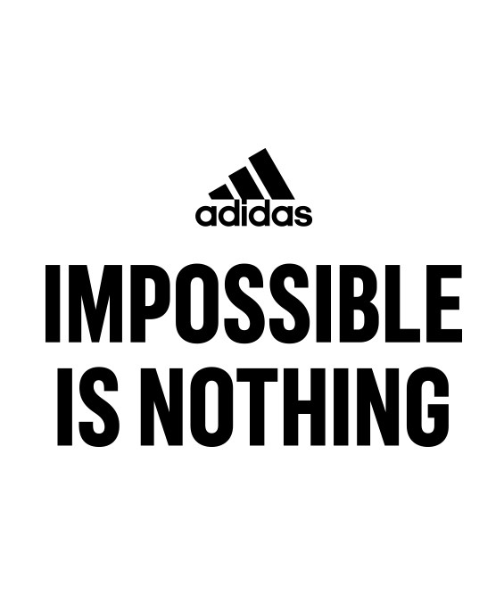

Classic Sportswear
Choose your look in the 3-stripe style for every day

ТВОЙ СПОРТИВНЫЙ МАГАЗИН. ДЛЯ ЛЮБОГО ВИДА СПОРТА
adidas создает экипировку для атлетов всех направлений.
С теми, кто любит менять ход игры. Бросать вызов условностям.
Нарушать правила и устанавливать новые. Затем нарушать их снова.
Спортсмены надевают нашу спортивную одежду перед матчем. Чтобы сосредоточиться.
И во время соревнований. Чтобы победить.
Мы — магазин спорттоваров для женщин, где бра и леггинсы имеют свое предназначение.
От низкого до высокого уровня компрессии и поддержки. Мы создаем, обновляем и повторяем.
Тестируем новые технологии в действии. На поле, на дорожке, корте и в бассейне.
Мы вдохновляемся спортивными силуэтами прошлого, создавая новые модели для городских улиц.
Как NMD или спортивные костюмы Firebird. Классические спортивные силуэты возвращаются.
Как Stan Smith. И Superstar.
Сегодня их можно увидеть на улицах и в медиа.
В наших коллекциях стираются границы между высокой модой и высокой функциональностью.
Так спортивная одежда adidas by Stella McCartney позволяет выглядеть стильно как в спортзале,
так и за его пределами А некоторые повседневные модели adidas Originals подходят для спортивных тренировок.
Наша жизнь постоянно меняется. Становится более многогранной. И adidas отражает это в своих коллекциях.
ADIDAS — ИСТОРИИ, СПОРТИВНАЯ ОДЕЖДА И ОБУВЬ С 1949
Спорт держит нас в форме. Учит дисциплине. Объединяет нас.
Через спорт мы можем менять жизни. В том числе с помощью воодушевляющих историй спортсменов.
Чтобы помочь тебе подняться и двигаться вперед.
В спортивных товарах используются новейшие технологии, которые помогут тебе достичь лучших результатов.
adidas становится домом для бегуна, баскетболиста, юного футболиста и поклонника фитнеса.
Того, кто любит покорять горные тропы или начинать свой день с медитации.
Музыканты тоже носят три полоски. На сцене, на фестивалях и просто на улицах.
Наша спортивная одежда помогает сосредоточиться, когда звучит стартовый свисток.
Во время гонки. На финишной черте. Мы здесь, чтобы поддерживать всех, кому важен спорт.
Улучшать их игру. Их жизни. И менять мир к лучшему.
adidas - это не только спортивная экипировка. Мы сотрудничаем с лучшими брендами в
отрасли и создаем стильную спортивную одежду, которая отвечает потребностям атлетов и помогает заботиться
о будущем планеты. Мы здесь, чтобы поддерживать всех, кому важен спорт. Улучшать их игру.
Создавать перемены. И мы думаем о том, какое влияние оказываем на окружающий мир.